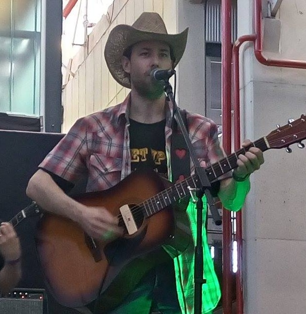

Dardo Freidenberger

43 años
Un lugar en La Pampa
Series que me gustan:
- Breaking Bad
- The Blacklist
- The Simpsons
- The IT Crowd
- Scrubs
- Friends
Pelis que más me gustaron:
- The Godfather
- Hot Shots
- Jane Austein's Mafia!
- Mel Brook's History Of The World
- Top Secret
Perfil:
Desarrollador para subsistir
Músico de hobby
Autodidacta en muchas cosas
Si querés contactarme, podés completar el siguiente formulario